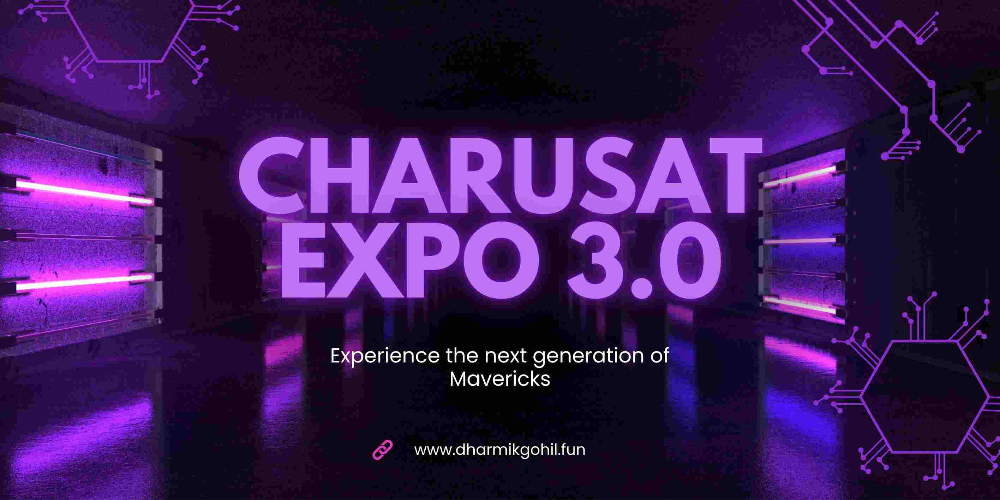
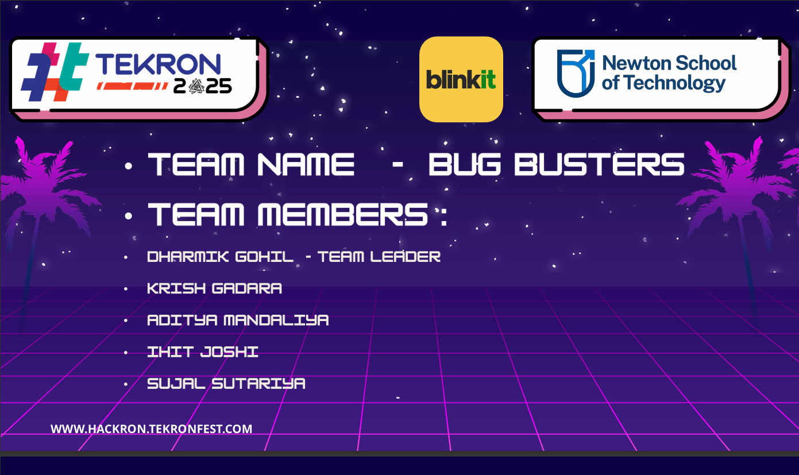
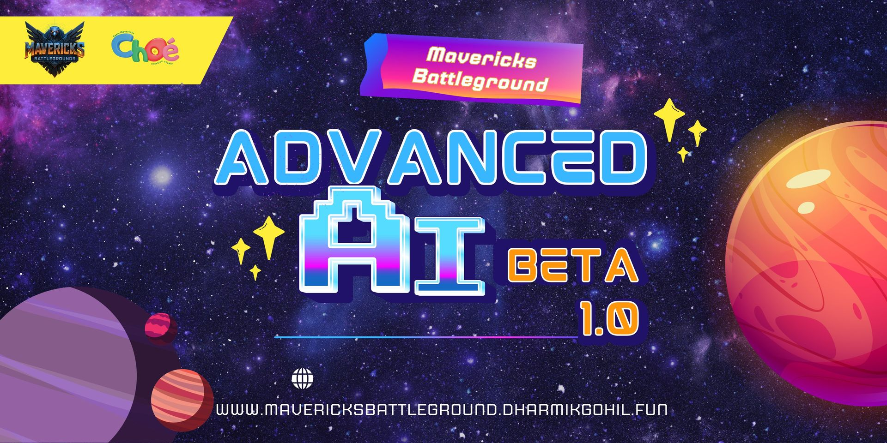

Blog & Insights
Game development insights, tutorials, and tech explorations.

CHARUSAT Expo 3.0 - Only IT Department Project Selected!
A proud moment! Our Mavericks Battlegrounds was the only project selected from the entire IT Department at CHARUSAT Expo 3.0. Over 5000+ students and faculty experienced our game and shared invaluable feedback!
Read Full Story
Hackron Hackathon 2025 - Building SafaiNova for Blinkit
Our team's thrilling 24-hour journey at Hackron Hackathon 2025 sponsored by Blinkit! We developed SafaiNova - an innovative waste management automation solution for dark stores at DY Patil University, Pune.
Read Full Story
IIT Bombay TechFest'24 - My Unforgettable Tech Journey
Experience my incredible 5-day journey at Asia's largest science & technology festival! Game development workshop, robotics, drones, robot dogs, weapons tech, and innovation showcase at IIT Bombay.
Read Full Story
Mavericks Battlegrounds: Complete Game Development Journey
Explore the complete development journey of Mavericks Battlegrounds, an epic multiplayer battle arena game developed in Unity 6 using Photon networking and Agile methodology at CHARUSAT University.
Read Full Story
Getting Started with Unity Game Development: A Beginner's Complete Guide
Learn how to start your game development journey with Unity — from installing the editor, understanding the interface, writing your first C# script, to building and exporting your very first game.
Read Tutorial
React.js vs Next.js: Which Framework Should You Choose in 2026?
A deep-dive comparison of React.js and Next.js — server-side rendering, static generation, routing, SEO, performance benchmarks, and when to use each framework for your project.
Read Comparison
Building Multiplayer Games with Photon PUN2 in Unity — Step by Step
A hands-on guide to adding real-time multiplayer to your Unity game using Photon PUN2 — room creation, player sync, RPCs, lag compensation, and lobby management with code examples.
Read Tutorial
Git & GitHub: 30 Essential Commands Every Developer Must Know
Master Git from basics to advanced — branching, merging, rebasing, cherry-pick, stashing, resolving conflicts, pull requests, and GitHub Actions CI/CD workflows with real-world examples.
Read Guide
Blockchain for Beginners: Understanding Smart Contracts & Solidity
Understand blockchain technology from scratch — how blocks work, what smart contracts are, writing your first Solidity contract, deploying to Ethereum testnets, and connecting with Web3.js.
Read Guide
VR/AR Development in 2026: Building Immersive XR Experiences with Unity
Explore the world of XR development — setting up Unity XR Interaction Toolkit, building hand-tracking apps for Meta Quest, spatial anchors, passthrough AR, and the future of immersive computing.
Read Insights
Top 15 VS Code Extensions Every Developer Needs in 2026
Supercharge your coding workflow with these must-have VS Code extensions — from GitHub Copilot and ESLint to Thunder Client, GitLens, Prettier, Live Server, and more for every language.
Read List
Web3 & DeFi Explained: A Developer's Complete Roadmap
Everything you need to know about Web3 development — decentralized apps, DeFi protocols, token standards (ERC-20, ERC-721), connecting MetaMask, and building your first dApp from scratch.
Read Roadmap
How to Build a Developer Portfolio That Gets You Hired in 2026
A practical guide to building a standout developer portfolio — choosing the right tech stack, showcasing projects effectively, SEO for developers, and what recruiters actually look for.
Read Guide
Data Structures & Algorithms: Complete Roadmap for Beginners
Master DSA from zero — arrays, linked lists, trees, graphs, dynamic programming, sorting algorithms, and a 90-day study plan with curated LeetCode problems for placement preparation.
Read Roadmap
Freelancing as a Developer in India: How I Earn While Studying
My honest experience freelancing as a college student in India — finding clients, pricing your work, managing deadlines alongside studies, best platforms, and tips to land your first gig.
Read Experience
UI/UX Design Principles Every Developer Should Know
You don't need to be a designer to build beautiful apps. Learn the core principles — visual hierarchy, color theory, typography, spacing, responsive design, and accessibility standards.
Read Principles
Build Your First Mobile App with React Native: From Zero to App Store
Step-by-step guide to building a cross-platform mobile app with React Native & Expo — setup, navigation, API integration, state management, styling, and publishing to Google Play & App Store.
Read Tutorial
Firebase Masterclass: Authentication, Firestore, Storage & Hosting
Master Firebase for your apps — Google Auth, email/password login, Firestore CRUD operations, real-time listeners, file uploads to Cloud Storage, push notifications, and free hosting setup.
Read Masterclass
Flutter vs React Native in 2026: The Honest Comparison
An unbiased comparison of Flutter and React Native — performance benchmarks, developer experience, ecosystem, community support, job market, and which one to pick for your next project.
Read Comparison
REST API Design: 12 Best Practices Every Backend Developer Should Follow
Design bulletproof REST APIs — proper status codes, versioning, pagination, authentication with JWT, rate limiting, error handling, validation, and documentation with Swagger/OpenAPI.
Read Best Practices
Unreal Engine 5 for Beginners: Build Stunning 3D Games from Scratch
Master Unreal Engine 5 from zero — install the Epic Games launcher, explore the editor, create landscapes, Blueprints visual scripting, Nanite geometry, Lumen lighting, and export your first playable game.
Read Tutorial
Godot Engine: Why Open-Source Game Dev Is Exploding in 2026
Discover why Godot is the fastest-growing game engine — lightweight, 100% free, GDScript vs C#, node-based architecture, 2D platformer tutorial, exporting to web/mobile/desktop, and community resources.
Read Guide
Game Physics & Collision Detection: The Complete Developer's Guide
Deep dive into game physics — rigidbody dynamics, AABB & sphere collision, raycasting, trigger zones, physics materials, Unity's PhysX engine, and optimizing collision performance in complex scenes.
Read Deep Dive
Creating Game Art with Blender: 3D Modeling, Texturing & Export to Unity
Learn Blender for game development — modeling low-poly characters, UV unwrapping, PBR texturing, rigging, animation basics, and exporting FBX models ready for Unity or Unreal Engine integration.
Read Tutorial
Game AI & Pathfinding: Making Smart NPCs with A* and NavMesh
Build intelligent game characters — finite state machines, behavior trees, A* pathfinding, Unity NavMesh baking, steering behaviors, enemy patrol patterns, and boss fight AI design patterns.
Read Guide
Publishing Your Indie Game: Steam, Itch.io & Google Play Complete Guide
Your complete guide to publishing games — Steamworks setup, store page optimization, itch.io deployment, Google Play Console, pricing strategies, press kits, and marketing your indie game effectively.
Read Guide
Build a Full Stack MERN App: E-Commerce Project From Scratch
Build a complete e-commerce application with the MERN stack — MongoDB database design, Express REST API, React frontend with Redux Toolkit, JWT authentication, Stripe payments, and Vercel deployment.
Read Project
Tailwind CSS Mastery: Build Beautiful UIs 10x Faster in 2026
Master Tailwind CSS — utility classes, responsive design, dark mode, custom configuration, @apply directive, JIT mode, building reusable components, and integrating with React/Next.js projects.
Read Mastery
TypeScript: The Complete Guide for JavaScript Developers
Level up your JavaScript with TypeScript — types, interfaces, generics, utility types, enums, decorators, module systems, migrating existing projects, and configuring tsconfig for production builds.
Read Guide
Web Performance Optimization: Score 100 on Core Web Vitals
Make your website blazing fast — lazy loading, code splitting, image optimization with WebP/AVIF, CDN setup, caching strategies, Core Web Vitals (LCP, FID, CLS), and Lighthouse 100 scores.
Read Optimization
Node.js & Express Masterclass: Build Production-Ready APIs
Build production-grade backends — Express routing, middleware patterns, MongoDB with Mongoose, JWT authentication, role-based access, file uploads, rate limiting, error handling, and Docker deployment.
Read Masterclass
CSS Animations & Micro-Interactions That Delight Users
Add polish to your websites — CSS keyframe animations, transitions, cubic-bezier timing, scroll-driven animations, GSAP integration, Framer Motion in React, and accessibility-friendly motion design.
Read Tutorial
Python for AI/ML: The Complete Beginner-to-Advanced Roadmap
Your complete AI/ML roadmap — Python fundamentals, NumPy, Pandas for data manipulation, Matplotlib visualization, Scikit-Learn for classical ML, model evaluation metrics, and real-world project ideas.
Read Roadmap
Deep Learning with TensorFlow & Keras: Neural Networks Explained
Understand neural networks from scratch — perceptrons, backpropagation, CNNs for image classification, RNNs for sequence data, transfer learning with pre-trained models, and deploying models with TF Serving.
Read Tutorial
Building AI Apps with OpenAI API: ChatGPT Integration Guide
Build AI-powered apps — OpenAI API setup, prompt engineering techniques, streaming responses, function calling, RAG with LangChain, vector databases, building chatbots, and cost optimization strategies.
Read Integration
Computer Vision with OpenCV & Python: Real-World Projects
Hands-on computer vision — image processing, face detection with Haar cascades, object detection with YOLO, pose estimation with MediaPipe, OCR with Tesseract, and real-time video analysis projects.
Read Projects
Natural Language Processing: Sentiment Analysis & Text Classification
Master NLP fundamentals — tokenization, stemming, TF-IDF, word embeddings, sentiment analysis with NLTK, text classification with Hugging Face Transformers, fine-tuning BERT, and building a chatbot.
Read Tutorial
Deploying ML Models: Flask API, Docker, and Cloud Platforms
Take your ML models from Jupyter to production — pickling models, building Flask REST APIs, containerizing with Docker, deploying to AWS/GCP, monitoring with MLflow, and CI/CD for ML pipelines.
Read Deployment
Solidity Smart Contracts: Write, Test & Deploy to Ethereum
Master Solidity from basics — data types, functions, modifiers, mappings, events, ERC-20 token creation, Hardhat testing framework, deploying to Sepolia testnet, and smart contract security best practices.
Read Tutorial
Build a Full-Stack NFT Marketplace with Solidity & React
Build your own NFT marketplace — ERC-721 contract, IPFS metadata storage with Pinata, React frontend, Ethers.js wallet connection, listing/buying/auctioning NFTs, and royalty implementation.
Read Project
DeFi Protocols Decoded: How Uniswap, Aave & Compound Work
Understand DeFi inside out — AMMs and liquidity pools (Uniswap), lending/borrowing protocols (Aave, Compound), yield farming strategies, flash loans, impermanent loss, and building your own DEX.
Read Deep Dive
Solana Development with Rust: Build Fast & Cheap dApps
Why Solana? Speed, low fees, and growing ecosystem. Learn Rust basics, Anchor framework, building Solana programs, SPL token creation, wallet integration with Phantom, and deploying to devnet.
Read Tutorial
Building a DAO: Governance Tokens, Proposals & On-Chain Voting
Build a fully functional DAO — governance token (ERC-20 Votes), proposal creation, on-chain voting mechanism, timelock execution, OpenZeppelin Governor contracts, and Snapshot off-chain voting integration.
Read Guide
Smart Contract Security: Common Vulnerabilities & Audit Techniques
Protect your smart contracts — reentrancy attacks, integer overflow, front-running, access control flaws, using Slither & Mythril for analysis, OpenZeppelin security patterns, and bug bounty programs.
Read Security Guide
AWS for Beginners: EC2, S3, Lambda & RDS — The Essential Services
Your first steps in AWS — creating an account, launching EC2 instances, S3 bucket storage, serverless functions with Lambda, RDS databases, IAM security, and estimating costs with the pricing calculator.
Read Guide
Docker & Kubernetes: From Containers to Production Orchestration
Master containerization — Dockerfiles, multi-stage builds, Docker Compose, Kubernetes pods/services/deployments, Helm charts, kubectl commands, scaling strategies, and deploying to EKS/GKE/AKS clusters.
Read Masterclass
CI/CD Pipelines with GitHub Actions: Automate Build, Test & Deploy
Automate everything — YAML workflow syntax, build/test/deploy pipelines, matrix testing, Docker image publishing, deploying to Vercel/Netlify/AWS, secrets management, and reusable workflow templates.
Read Pipeline Guide
Serverless Architecture: Build Scalable Apps Without Managing Servers
Go serverless — AWS Lambda functions, API Gateway, DynamoDB, Vercel Edge Functions, Cloudflare Workers, serverless frameworks, cold starts optimization, cost comparison, and when serverless makes sense.
Read Architecture
Google Cloud Platform: Essential Services for Web & App Developers
Navigate GCP — Compute Engine, Cloud Run for containers, App Engine deployment, Cloud Functions, BigQuery for analytics, Cloud Storage, Firebase integration, and free tier maximization tips.
Read Guide
Linux & Shell Scripting: Essential Skills for Every Developer
Master the terminal — essential Linux commands, file permissions, grep/awk/sed, bash scripting, cron jobs, SSH key management, system monitoring, and automating repetitive DevOps tasks with scripts.
Read Tutorial
SwiftUI for iOS: Build Beautiful Native Apps with Declarative UI
Build stunning iOS apps — SwiftUI views, modifiers, navigation, state management with @State/@Binding, Core Data persistence, animations, widgets, and publishing to the App Store step by step.
Read Tutorial
Modern Android Dev: Kotlin & Jetpack Compose Complete Guide
Build modern Android apps — Kotlin essentials, Jetpack Compose UI toolkit, MVVM architecture, Room database, Retrofit networking, Hilt dependency injection, and releasing to Google Play Console.
Read Guide
Build Desktop Apps with Electron.js: From Web Dev to Desktop
Turn your web skills into desktop apps — Electron architecture, main/renderer processes, IPC communication, native menus, system tray, auto-updates, packaging with electron-builder, and code signing.
Read Tutorial
Progressive Web Apps: Build Installable Apps with Web Technologies
Build app-like experiences on the web — service workers, caching strategies, web app manifest, push notifications, offline functionality, background sync, and making your PWA installable on any device.
Read Guide
Supabase: The Open-Source Firebase Alternative Every Dev Should Know
Discover Supabase — PostgreSQL database, real-time subscriptions, authentication, storage, edge functions, row-level security, and building a full-stack app with Supabase + Next.js in under an hour.
Read Tutorial
GraphQL vs REST: When to Use Which & Building Your First GraphQL API
GraphQL or REST? Understand the trade-offs — schema design, queries/mutations/subscriptions, Apollo Server setup, type resolvers, N+1 problem, DataLoader, and migrating from REST to GraphQL incrementally.
Read Comparison